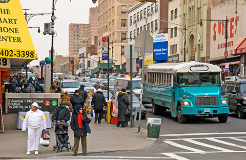

Trouble In Uptown
The dramatic rise in opioid-related deaths has devastated communities around the United States in recent years, and has stirred concern among law enforcement and public health officials alike in New York City.
Here, the reports about the epidemic and its ravages have mostly centered on Staten Island, where the rate of deaths per person is the highest of the five boroughs. But perhaps nowhere in the city has the trajectory of opioid addiction been as complex as in the Bronx, where overdose deaths were declining until a new surge began at the turn of the decade, and where more residents are lost to overdoses than anywhere else in the city. On Bronx streets, the epidemic’s devastation is next door, down the street, all around.
The increase in deaths — now at the highest levels since the city began collecting the data in 2000 — has been fueled by social forces that have left some Bronx residents especially vulnerable: a history of high drug use in the area; a growing supply of cheap heroin on the streets; and the proliferation of a deadly synthetic opioid, fentanyl. 